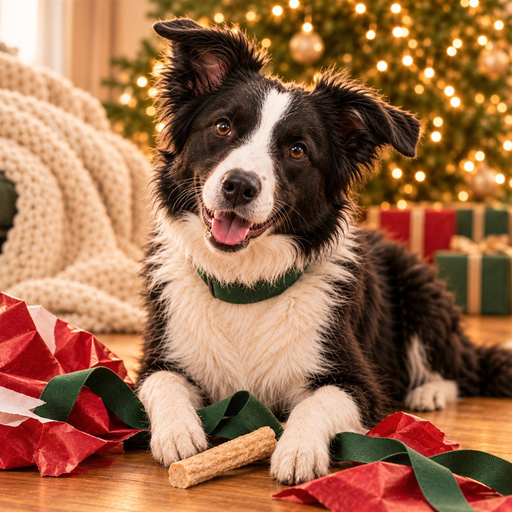
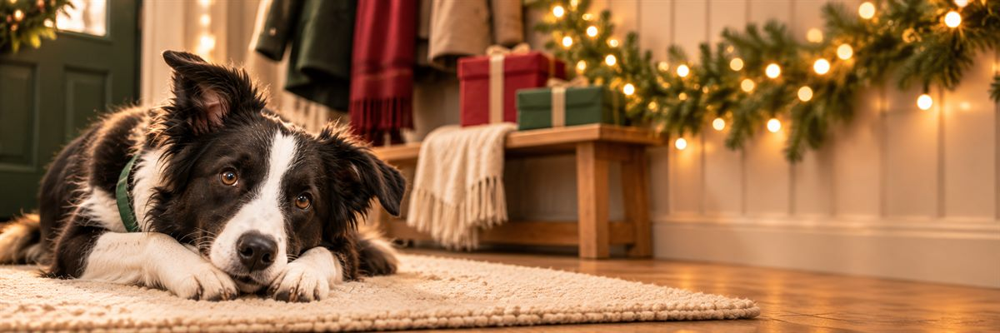

Portfolio case study
A whole campaign in seven days: A calmer Christmas
I am Naiomi Wright, a brand and product marketer in animal health. This is how I planned and built a full four-week campaign, from the brief to the results, in one week, using Claude Code.
The brand and the numbers are made up. Brackenfold Pet Health and Brackenfold Settle do not exist. Every budget, target and result on this page was made up for practice. Nothing here comes from any employer.
The brief
Brackenfold Pet Health is a made-up UK company, and Brackenfold Settle is its made-up chew for dogs. The job was a four-week Christmas campaign to get dog owners and vet practices to sign up for a free sample, and I wanted the dog's interests at the heart of everything, so owners could enjoy Christmas Day without worrying about their dog.
There were four audiences, and each one got its own message, because the same product means something different to each of them:
| Audience | The one message |
|---|---|
| Dog owners | A festive treat made for your dog, so you can both enjoy Christmas Day. |
| Vet practices | Try Brackenfold Settle free this Christmas, and see if it suits the dogs you care for. |
| Sales team of eight | Everything you need to sell Settle: samples, clear literature and answers to the top questions. |
| Customer care | You hear it first: dates, stock levels and the sample process, before any customer calls. |
I also set the rules for all copy on day one. No medical claims, no saying it reduces stress or anxiety, no safety wording until it has been checked, and never naming another product. That rule came back to save me later in the week.
What I built in seven days
I worked on it in short sessions, most of them under an hour, and every day ended with something real saved, checked and pushed to GitHub.
- Mon
Set up the project folder, my rules file, my skills and my GitHub account, and tested that Claude Code could make real Excel, Word and PowerPoint files.
- Tue
Wrote the brief and built the Excel plan: five tabs, with every total worked out by a formula.
- Wed
Made three campaign images, wrote nine emails and posts, ran a brand review and built a 14-page sign-off pack in Word.
- Thu
Built the landing page, put it live on GitHub Pages and added a tracked link for every external item on the calendar.
- Fri
Built the internal launch pack: my launch email, a one-page sales briefing, a customer care FAQ and a five-slide deck.
- Sun
Turned a made-up results file into a results workbook, a live dashboard and a readout of what worked.
- Sun
Turned the whole week into a repeatable skill, tested it on a second made-up product, and wrote this page.
The plan
The plan is a real Excel workbook with five tabs: Brief, Audiences, Calendar, Budget and Targets. I set it up the way I would want to hand it to a director, so the blue numbers are the ones you can change and everything in black is a formula, and if you change one cost the totals and the cost per sign-up all move with it.
- Budget: £5,000 across nine lines, with the shared costs (samples, postage, design and print) split across the five channels, and a check row that shows the total equals the budget.
- Targets: a funnel for each channel, from people reached to clicks to sign-ups, worked backwards so the five channels add up to the 600 goal.
- Calendar: every email, post, briefing and weekly update, with an owner, a status and a tracked link, and the internal items dated before anything goes out to customers.
The external campaign
I made the images in ChatGPT, then Claude Code brought them into the project, made web-sized copies and wrote a description of each one for people who cannot see them. The dog is called Bramble.



From those, I built nine pieces across five channels: three emails to dog owners, one to vet practices, two Facebook posts, one Instagram post and two LinkedIn posts. They all went into one Word pack, with each image next to its copy, so a head of marketing could sign the whole thing off in one go.
The brand review caught something I missed
My first launch email opened with a busy, noisy house at Christmas, and then offered a product called Settle. Every line on its own was fine, but read together, it hinted that the chew calms a stressed dog, and that is exactly the claim my own rules ruled out. UK advertising rules judge the overall impression, not just the words, so I rewrote the opening around family instead:
It is a time for the whole family. And your dog is part of the family.
Then I built the landing page in the same colours as the hero image, and gave every external item on the calendar its own tracked link, so you can see which email or post each sign-up came from.
The internal pack
In my real job, I have learned that a launch goes wrong when the sales team or customer care hear about it from a customer first, so the internal pack was dated to land before anything went out.
- A launch email to the teams, written in my own voice.
- A one-page sales briefing, with the three things to say and the three questions they will get, including "Does it calm dogs down?" and the honest answer.
- A customer care FAQ with ten questions on dates, stock levels and the sample process, and any health question goes to the vet.
- A five-slide deck for the Monday team meeting: the goal, who we are talking to, the calendar, what I need from each team, and how we will measure it.
The dashboard
I made up a results file for the four weeks, one row per item per day, and built a results workbook and a live dashboard from it, in the same look as the landing page, so I could take it into any team meeting and everyone could read it straight away.
Then I answered three questions myself, in my own words, before I read Claude's answers: what worked, what did not, and where I would move the money. We agreed on the big picture. Email to dog owners was the winner, and Instagram was the clear miss, spending more than twice its budget for 30 sign-ups.
But Claude also caught two things I had got wrong. I had called LinkedIn free, when the file just showed £0 spend against a £450 plan, so that needed checking before anyone called it free. And the figures I quoted for week three were really the four-week totals. That is exactly why I check the numbers before they go into a meeting.
What I would change
Pick a name that cannot make a claim
"Settle" and "A calmer Christmas" kept pulling the copy towards a calming claim that the brief did not allow. Next time I would test the product and campaign names against the copy rules on day one, before anything is written.
Send every planned email
Week two had no email at all, and it was the weakest week. The vet email also went out once, not three times. Email was the best channel, so I would protect those sends first.
Pause Instagram, or test new creative small
It spent the most for the fewest sign-ups. I would move that money into growing the email list and improving the sign-up form, because the sign-up rate was below target on every channel.
Agree the results file before the campaign starts
The £0 LinkedIn spend showed me the tracking has to be agreed up front, so every channel's real cost lands in the same file.
How I used Claude Code to do it
I am new to code, so I often talked to Claude Code by voice and asked it to work in short, plain steps, one question at a time. I stayed the marketer the whole way through. I wrote the brief, chose the messages, made the images, approved every piece of copy and answered the results questions myself, and Claude Code did the building.
- Rules first. I wrote a rules file that Claude Code reads before every job: plain English, British spelling, never invent a number, nothing private, and ask me before anything is published.
- Real files, not chat. It drove Excel, Word and PowerPoint on my own computer, so everything is a real file I can open, with real formulas.
- Skills. I used skills for the campaign plan, brand review and performance report, and I built my own: one for tracked links, one for launch emails in my voice, and one called campaign-kit that repeats this whole week for any product.
- Proof every day. Each day ended with a short checklist of what was made and how it was checked, like the cell that holds the budget total or the page count of the sales briefing.
- I checked its work. The brand review, the numbers in the readout and the claims in every piece were all checked by me before I said yes.
What went wrong, and what I learned from it
Not everything worked first time, and I think that is the useful part. Excel scripts failed a few times before the formulas went in properly, an update to the calendar left eight rows blank and it was only caught when I checked the day's work, and I changed "festive" to "Christmas" on the live page and then changed it straight back, because it no longer matched the brief. Every one of those is now written into the campaign-kit skill as a lesson, with the fix, so it does not happen twice.
To test the campaign-kit skill, I gave it a short brief for a second made-up product, a joint supplement for older cats, and it built the plan and three owner emails in about four and a half minutes. It also marked everything it had to guess as "to confirm", which is exactly what I wanted.
Thank you for reading
I am looking for a brand or campaign marketing role in animal health, pet care, equine, zoos or conservation. My CV and contact details are on naiomiwright.com.